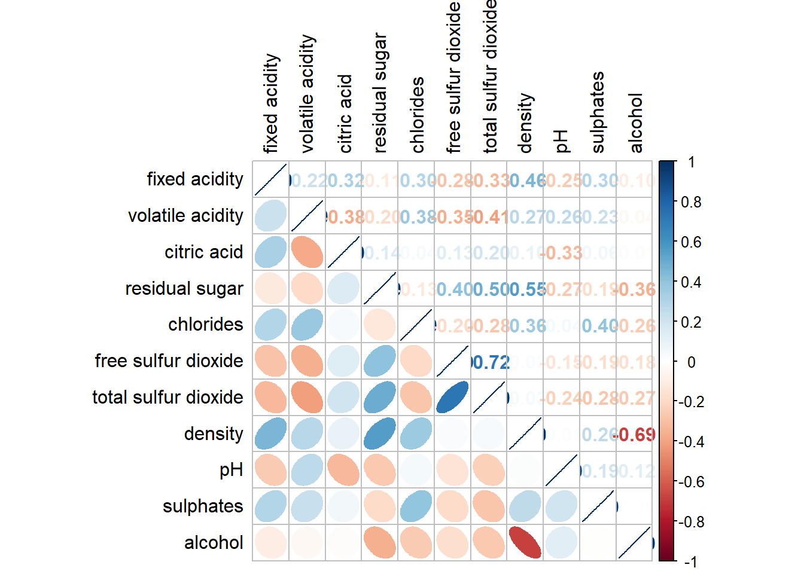

pacman::p_load(corrplot, tidyverse, ggstatsplot)Hands-On Excerise 5
1. Installing and Launching R Packages
Importing Data
wine <- read_csv("data/wine_quality.csv")2. Correlation Matrix: pairs() method
Basic Plot
pairs(wine[,2:12])
3. Correlation Matrix: ggcormat()
Basic plot
ggstatsplot::ggcorrmat(
data = wine,
cor.vars = 1:11)
Adding title and subtitle. list() function enables adjustment to be made within the chart.
#ggcorrplot is able to autofill x and y axis and slant the axis labels automatically
#| fig-width: 7
#| fig-height: 7
ggstatsplot::ggcorrmat(
data = wine,
cor.vars = 1:11,
ggcorrplot.args = list(outline.color = "black",
hc.order = TRUE,
tl.cex = 10),
title = "Correlogram for wine dataset",
subtitle = "Four pairs are no significant at p < 0.05"
)
Multiple Plots
grouped_ggcorrmat(
data = wine,
cor.vars = 1:11,
grouping.var = type,
type = "robust",
p.adjust.method = "holm",
plotgrid.args = list(ncol = 2),
ggcorrplot.args = list(outline.color = "black",
hc.order = TRUE,
tl.cex = 10),
annotation.args = list(
tag_levels = "a",
title = "Correlogram for wine dataset",
subtitle = "The measures are: alcohol, sulphates, fixed acidity, citric acid, chlorides, residual sugar, density, free sulfur dioxide and volatile acidity",
caption = "Dataset: UCI Machine Learning Repository"
)
)
4. Correlation Matrix: corrplot
wine.cor <- cor(wine[, 1:11])Basic
corrplot(wine.cor,
method = "ellipse",
type="lower",
diag = FALSE,
tl.col = "black")
Mixed Layout
corrplot.mixed(wine.cor,
lower = "ellipse",
upper = "number",
tl.pos = "lt",
diag = "l",
tl.col = "black")
Adding Significant Test
Compute p-values and confidence interval
wine.sig = cor.mtest(wine.cor, conf.level= .95)Using p.mat argument,
corrplot(wine.cor,
method = "number",
type = "lower",
diag = FALSE,
tl.col = "black",
tl.srt = 45,
p.mat = wine.sig$p,
sig.level = .05)
Reorder a Corrgram
corrplot.mixed(wine.cor,
lower = "ellipse",
upper = "number",
tl.pos = "lt",
diag = "l",
order="AOE",
tl.col = "black")